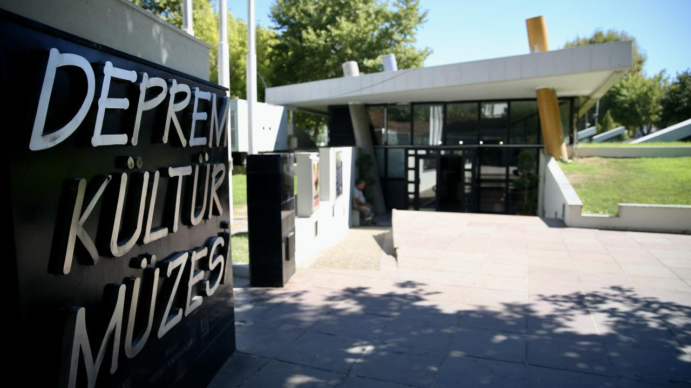

Justinianus Köprüsü (Beşköprü)

Sakarya'nın Serdivan ilçesinde, Sakarya Nehri üzerinde yer alan Justinianos Köprüsü ya da halk arasında bilinen adıyla Beşköprü, Bizans dönemine ait önemli tarihi eserlerden biridir. Köprü, Bizans İmparatoru I. Justinianos tarafından MS 6. yüzyılda (564 yılında) inşa ettirilmiştir. Yaklaşık 365 metre uzunluğunda ve 9,85 metre genişliğinde olan bu taş köprü, Roma dönemi mimarisinin izlerini taşıyan sağlam yapısıyla günümüze kadar ulaşmıştır. On üç kemerli bir yapıya sahip olan Beşköprü, dönemin önemli ulaşım yollarından biri olan Konstantinopolis (İstanbul) ile Batı Anadolu arasındaki bağlantının sağlanmasında kritik bir rol oynamıştır. Aynı zamanda askeri ve ticari geçişler için de büyük önem taşıyan köprü, yüzyıllar boyunca bölge halkının yaşamında merkezi bir yer tutmuştur.

Köprünün mimarisi, dönemin mühendislik bilgisini yansıtan etkileyici özellikler taşır. Taş blokların keskin ve uyumlu bir biçimde dizilmesiyle oluşturulan kemerler, nehirdeki su seviyesine göre dayanıklılık göstermektedir. Ayrıca taş blokların arasındaki harçta kullanılan özgün karışım, yapının zaman içinde sarsıntılara karşı dayanıklılığını artırmıştır. Bugün araç trafiğine kapalı olan köprü, yalnızca yayalar tarafından kullanılmakta ve ziyaretçiler için bir tarih yolculuğu sunmaktadır. 1995 yılında restorasyondan geçirilen yapı, hem tarihi hem de kültürel değer açısından koruma altına alınmıştır. Sakarya’nın tarihi kimliğini yansıtan en önemli yapılardan biri olan Beşköprü, yalnızca bir ulaşım aracı değil, aynı zamanda bin beş yüz yıllık bir geçmişin canlı tanığı olarak ziyaretçilerini büyülemeye devam etmektedir.
Deprem Kültür Müzesi
Sakarya Deprem Kültür Müzesi, 1999 Marmara Depremi'nin acı hatıralarını yaşatmak ve gelecekteki olası afetlere karşı bilinç oluşturmak amacıyla kurulmuştur. Müze, özellikle deprem gerçeğini halkla buluşturmak, afet bilincini artırmak ve toplumda farkındalık yaratmak gibi önemli misyonlara sahiptir. Müzede, depremin etkilerini gösteren görseller, interaktif eğitim panelleri, sismik simülatörler ve afet anında yapılması gerekenlerle ilgili bilgiler yer alır. Eğitim amaçlı düzenlenen gezilerle öğrenciler ve halk, afetlere karşı bilinçlenmektedir.

Deprem Kültür Müzesi aynı zamanda bilimsel araştırmalara da katkı sağlamaktadır. Sismolojiye dair maketler, yer kabuğu hareketlerini gösteren modeller, geçmişteki büyük depremlere dair dokümantasyonlar bu müzede sergilenmektedir. Sakarya’nın merkezinde bulunan bu müze, sadece bir anı noktası değil, aynı zamanda eğitim ve bilinçlendirme merkezi olarak da işlev görmektedir. Depreme dayanıklı şehirler kurmak için farkındalık oluşturmak isteyen herkesin mutlaka ziyaret etmesi gereken önemli bir yapıdır.